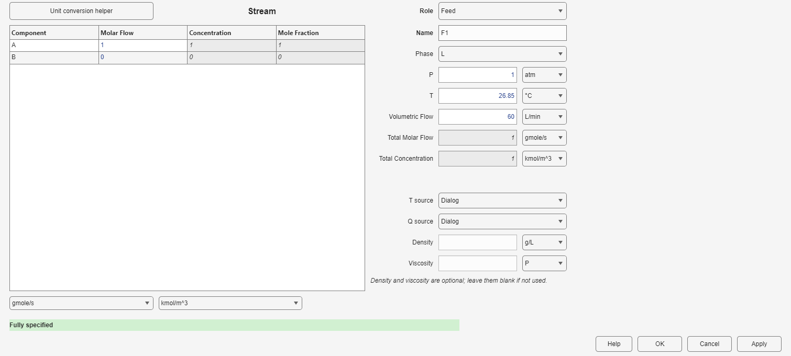
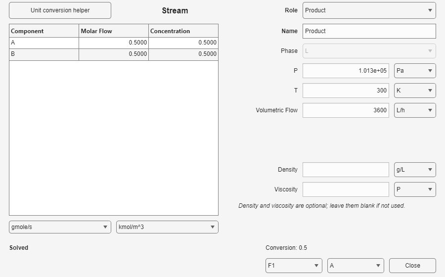

A named Stream carries the material state between units and makes specifications and results visible.
Define the Reactive System and at least one named feed. Keep its component order and displayed units at hand.
A Feed has no material input and one output. Enter its phase, component flow or concentration, pressure, temperature, and volumetric flow. An intermediate Stream has one input and one output. A Product has one input and no output; after a successful run it displays calculated conditions and can report conversion using Reference feed and Key component.


| Variables | Relations used |
|---|---|
| Component and total molar flows, concentrations, mole fractions, mass flows and fractions when molecular weights are available, volumetric flow, temperature, and pressure | Component totals and fractions are consistent with the total flow; concentration and molar flow are linked by volumetric flow. Gas volumetric flow also follows temperature and pressure. |
Enter the independent information you know and leave values that follow from those entries empty. A Feed must contain enough composition, flow, temperature, pressure, and phase information to define its state.
Example: open example 1, Isothermal CSTR, to see a Feed, an intermediate material connection, and a Product around a CSTR.
| Message | Correction |
|---|---|
| Stream is unconnected. | Connect the Stream to at least one process block. A Feed has a consumer, a Product has a producer, and an intermediate Stream has both. |
| Unknown or missing feed | The Feed Stream name must match a feed defined in Reactive System. Reopen Reactive System and add or rename the feed. |
Connect the prepared Streams to a CSTR, PFR, or another process unit, then close that block's degrees of freedom.